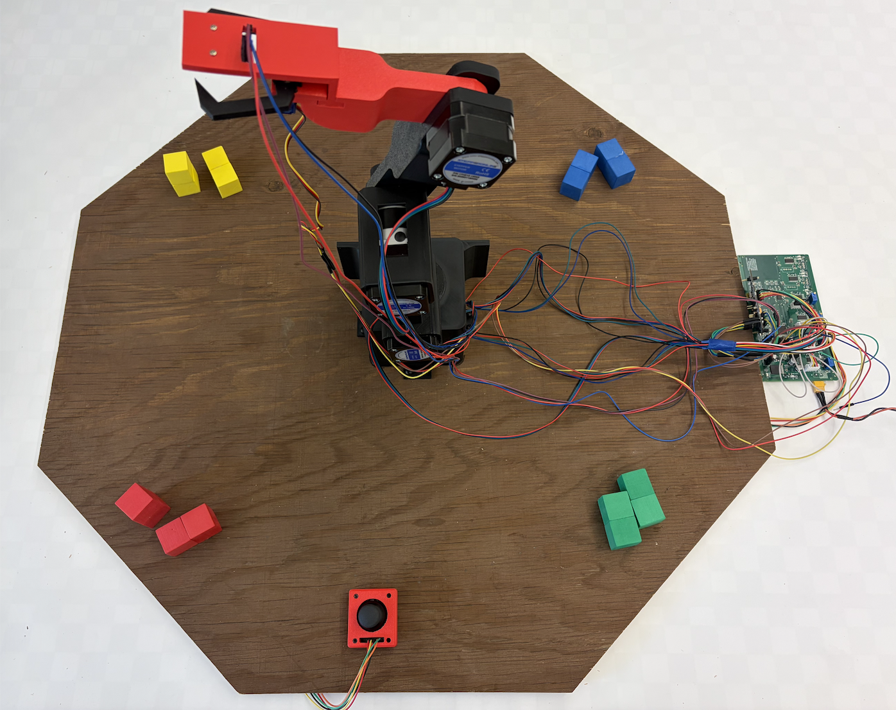
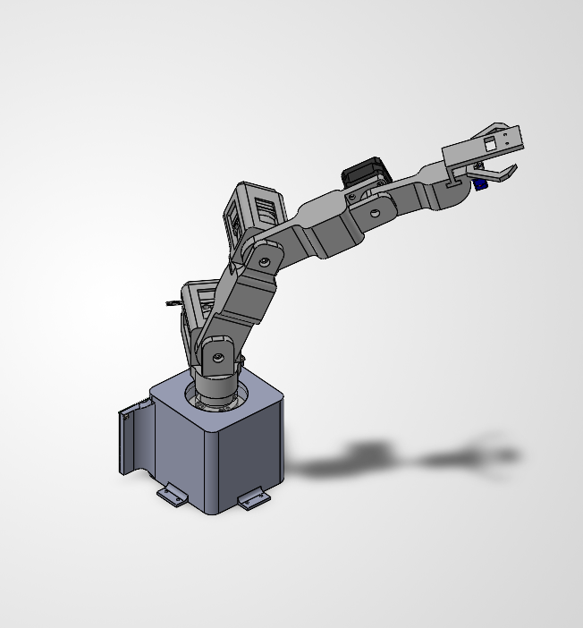
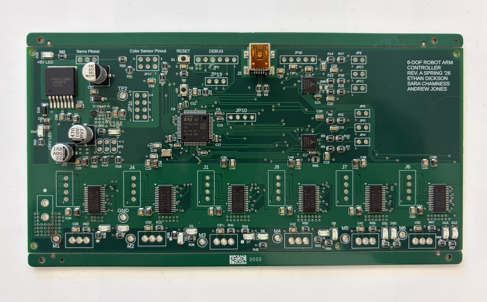
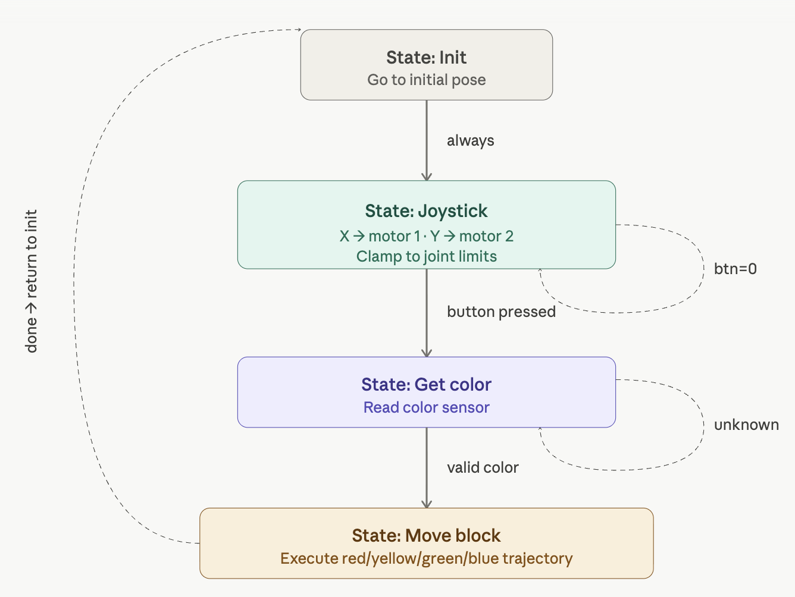

- Generated by
 1.17.0
1.17.0
|
Robotic Arm
ME 507 Mecha05 Term Project
|
Authors: Ethan Dickson, Andrew Jones, & Sara Chamness
This website documents the design and implementation of a 4.5 degree-of-freedom robotic arm. The project was completed as the authors’ term project for ME 507 at Cal Poly, San Luis Obispo.
The robot is a semi-autonomous color-sorting device. It consists of four stepper-driven joints and a servo-powered gripper. The arm is designed to pick up foam blocks, identify their colors, and sort them into designated locations.
To operate the device, the user first aligns the arm horizontally and presses the joystick select button to zero the motors. During the first stage of operation, the user manually positions the arm by maneuvering the joystick to direct the robot toward a block. Once the arm is positioned, the user presses the select button again to begin the automated color-sorting sequence. The color sensor, mounted on the end effector, reads the color of the block. The robot then grips the block and autonomously moves it to the corresponding color location.
The system is built around a custom-designed PCB featuring an STM32H7 microcontroller. The project was developed using the STM32 ecosystem, and the firmware was implemented in C. The system uses open-source hardware drivers to interface with more complex electronic components, along with the STM HAL library to simplify communication with the microcontroller.
The project repository is linked here: 507-Arm-Project.


The robot arm was designed in SolidWorks and 3D printed out of PLA at the Cal Poly Makerspace. 3D printing reduced manufacturing cost and complexity while allowing the design to be iterated quickly. The arm houses four stepper motors, one at each joint, as well as a servo motor on the end effector.
Each stepper motor is mounted to the fixed portion of its joint using screws, while the motor shaft is press fit into the rotating component. The end effector uses small 3D-printed gears to open and close the gripper, and the color sensor is mounted near the gripper to read the blocks before sorting. The full arm assembly is mounted to a plywood base for stability during operation.
The stepper motors, numbered 1 through 4, were sized by calculating the anticipated static and dynamic load on each motor. Motor 1 experiences the greatest load because it supports the weight and motion of the other motors, links, and accessory components.
| Motor | Static | Dynamic | Total | FS (holding) | FS (curve) |
|---|---|---|---|---|---|
| 1 | 0 | 36.0690827 | 36.0690827 | 4.491381202 | 4.05471914 |
| 2 | 167.195754 | 36.0690827 | 203.2648367 | 1.593979585 | 1.106930267 |
| 3 | 68.52285 | 12.12007253 | 80.64292253 | 2.008855767 | 1.813550345 |
| 4 | 14.95044 | 1.518964704 | 16.4694047 | 1.420816382 | - |
The system runs on 12 V and 6 A and is powered by the benchtop power supplies available in the Mechatronics Lab. An XT-30 cable serves as the connector between the power supply and the PCB. All peripheral devices connect to the board using JST or Dupont connectors.
The system runs off a custom PCB designed in Fusion 360 Electronics and manufactured by JLCPCB. All SMD components were assembled by JLCPCB, while the through-hole components were soldered by hand. The main features and components of the electrical system are described below.
The board was originally designed to handle 24 V input power. During implementation, it was discovered that 12 V is sufficient for the system, but the power distribution layout still includes the following:
The STM32H7 was selected over the STM32F4 because of its advanced features with only a marginal cost increase. It includes a double-precision floating-point unit and a higher clock speed, which made it a strong choice for a project involving motor control, sensor readings, and future expansion.
The TMC429 motion controller sits between the MCU and the stepper motor drivers. Its purpose is to handle motion planning and generate step pulses for the motor drivers at the correct times. In this project, the TMC429 is operated in ramp mode. It receives position commands from the MCU over SPI, plans acceleration and deceleration profiles, and sends pulse signals to the motor drivers.
Stepper motor drivers are used to control the four stepper motors. The drivers are configured for microstepping to produce smoother, higher-resolution motion. Although enabling microstepping reduces available motor torque, the application does not require the motors’ full torque output. Each stepper motor has two phases, and the driver controls timed current flow through those phases to rotate the motor. The stepper drivers receive pulses from the motion controllers and drive the motors accordingly.
The board includes several test LEDs to support debugging. The power supply rail, 5 V rail, and VDD rail each have an indicator LED. Each motor driver also has two LEDs to visually indicate when its fault conditions are triggered.
The board uses an 8 MHz crystal oscillator to provide more precise timing for the microcontroller.
Firmware development was done using an ST-Link connected to the PCB through SWD.
The PCB includes pin headers for connecting all peripheral devices, including the joystick, color sensor, servo, and stepper motor wiring.
The PCB was intentionally overdesigned and includes several features that went unused in the final implementation, including limit switch inputs, a USB mini connector, and extra motor driver support. These features allow for future development and provide room for increased complexity in later iterations.

The system uses a TCS34725 color sensor breakout board for block color detection. The color sensor communicates with the MCU over I2C. A 2-DOF joystick is held by the user and wired to the MCU. The joystick provides analog voltage signals to the MCU, which are read using the MCU’s ADC. Finally, the servo motor that actuates the gripper receives PWM signals from the MCU, with the pulse width controlling the gripper position.
The firmware is written in C. Open-source hardware drivers were integrated to interface with the motion planning chips and the color sensor. Custom drivers, wrappers, and helper functions were also written to simplify the use of each component.
The arm’s functionality is separated into two main phases: joystick-controlled block locating and autonomous block sorting. The execution of tasks, functions, and transitions between these phases is implemented using a finite state machine. The state machine is called continuously from the main while loop and controls the high-level behavior of the robot. The state-transition diagram below describes the full operating sequence.
Motion control is done by specifying target positions rather than solving full kinematics or inverse kinematics. The use of stepper motors and motion-planning chips made this approach possible and greatly reduced the computational complexity of the robot’s motion.
For autonomous motion, each desired path is defined by a trajectory struct. Each struct contains a series of waypoints that describe the arm’s path. When the execute_trajectory function runs, the MCU and motion planning chips sequentially command the position of each motor at every waypoint. This design made implementing autonomous motion straightforward, since new paths could be created by defining additional waypoint sequences and specifying the desired motor positions and gripper state at each step.
The first phase of motion is controlled by the joystick, which moves two joints of the arm. Left-right joystick motion rotates the base joint, Motor 1, while up-down joystick motion rotates Motor 2.
The joystick readings are filtered so that the joystick must move more than halfway toward its maximum or minimum position in a given direction before the reading is accepted. This helps filter out noise and prevents small, unintentional joystick movements from moving the motors. The joystick can also move Motors 1 and 2 simultaneously if it is pushed at an angle.
The MCU receives RGB and clear-channel readings from the color sensor over I2C. The RGB values are normalized against the clear value, and the normalized readings are then used to compute a hue angle between 0 and 360 degrees.
The hue angle is mapped into six color categories: red, orange, yellow, green, blue, and purple. During testing, we found that red, yellow, green, and blue objects were classified more consistently, so only those four colors were used during the final demonstration.
The following states organize the timing and execution of the robotic arm’s full functionality:

The init state runs once at startup and immediately commands the arm to move to its predefined initial pose by calling execute_trajectory with the initial_pose trajectory defined in maneuvers.c. This ensures the arm is in a known, safe configuration before the operator begins manual control. Once the trajectory completes, the FSM unconditionally transitions to the joystick state.
This state is the operator's primary interface for positioning the arm over a target block. On every run of main.c in this state, Joystick_Read is called from joystick.c, which uses HAL_ADC_ConfigChannel to toggle ADC1 between channel 16 (Y axis) and channel 17 (X axis), reading each in sequence via HAL_ADC_Start and HAL_ADC_PollForConversion. The raw 12-bit ADC values are filtered to eliminate noise and produce directional outputs of 0, 1, or 2 for each axis (no move, negative move, positive move). Back in fsm.c, these directional values drive move_to_pos calls on Motor 1 and Motor 2 from motion.c, with the new target position limited within predefined joint limits defined by to avoid cable tangling and grounding of the arm. The button is read via HAL_GPIO_ReadPin on the SEL pin, and a button press transitions the FSM to the get color state.
This state polls the TCS34725 color sensor until a valid color reading is returned. FSM_Update calls COLOR_SENSOR_Read in color_sensor.c. This function uses the tcs34725_read_rgbc vendor driver (driver_tcs34725.c) over I2C. The raw RGBC values are normalized by dividing by the clear channel, then passed to the classify function which computes the HSV hue angle and maps it to a ColorResult_t enum value defined in color_sensor.h. If the clear channel is below MIN_CLEAR or the saturation ratio is below 0.15, COLOR_UNKNOWN is returned and the state loops, re-reading until a valid result is obtained. Once reading of red, yellow, green, or blue is detected, it is stored in the detected_color variable in fsm.c and the FSM transitions to the move block state.
This state executes the full pick-and-place trajectory corresponding to the detected color. At entry, the current joint positions of Motor 1 and Motor 2 are captured via get_current_pos and written into the first two waypoints of the selected trajectory, ensuring the arm starts its motion from wherever the operator left it rather than transitioning to a fixed start position. Based on detected_color, one of four trajectories — red_trajectory, yellow_trajectory, green_trajectory, or blue_trajectory — defined in maneuvers.c is passed to execute_trajectory, which steps through each waypoint sequentially, commanding all four motors via move_to_pos and blocking until all motors reaches their target within a radian tolerance before advancing. Gripper open and close commands are embedded directly in the waypoint sequence via the servo field, triggering Servo_Open or Servo_Close from servo.c at the appropriate steps. Once the final waypoint is reached and the arm returns home, the FSM transitions back to the init state to reset for the next block.
The PCB did not require any rework, but several challenges came up during programming and testing.
One of the largest challenges was debugging the SPI communication between the MCU and the motion planning chips. This took several days and involved identifying both a bug in the custom code used to interface with the chip driver and an additional bug that was holding the reset signal high.
Reading the joystick output with the MCU’s ADC also presented challenges. The current implementation manually reconfigures the ADC to switch between the X-axis and Y-axis channels each time the joystick reading function is called. This approach works, but it required careful debugging to ensure both axes were being read correctly.
The SWD interface between the MCU and the ST-Link also had occasional connectivity issues. These were resolved at different points by resetting the MCU, wiping and reprogramming the code using STM32CubeProgrammer, and fixing a faulty hardware connection.
The final system successfully demonstrated the main goals of the project: joystick-assisted block selection, color detection, gripping, and autonomous sorting. During operation, the user could manually position the arm over a foam block, trigger the color-sorting sequence, and allow the robot to complete the pick-and-place motion automatically.
Demo Video 1:
Demo Video 2:
Future improvements to the design include adding limit switches to automate the homing routine for each motor. This would make startup more reliable and reduce the need for manual alignment before operation.
The gripper should also be redesigned to provide a more robust and reliable interface for gripping the foam blocks. A stronger or more compliant gripper design could improve consistency when picking up blocks from slightly different positions.
Adding more joystick inputs would allow for better manual control of the arm, and the resolution of joystick-based motion control could also be improved. Later iterations should also place more emphasis on wire routing and cable management, since the moving joints create opportunities for cable tangling or interference during operation.